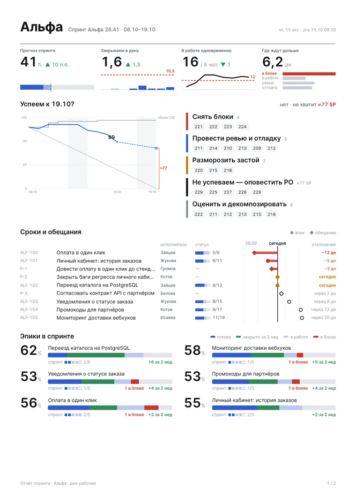
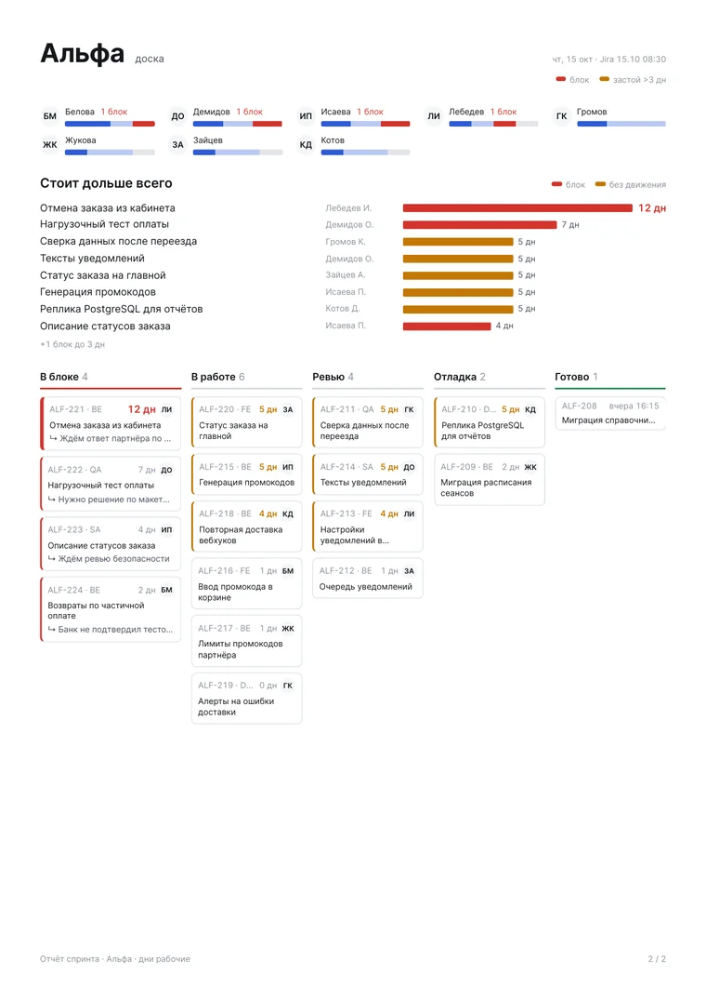
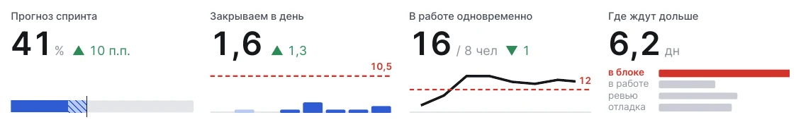
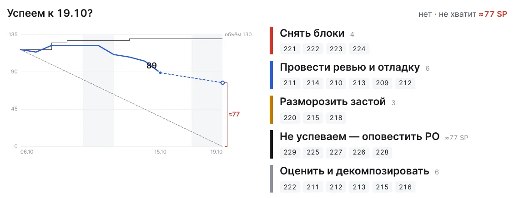
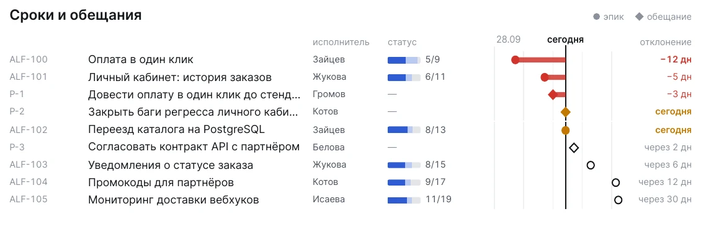
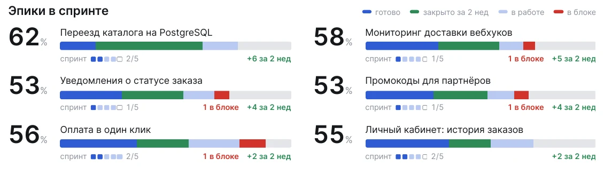
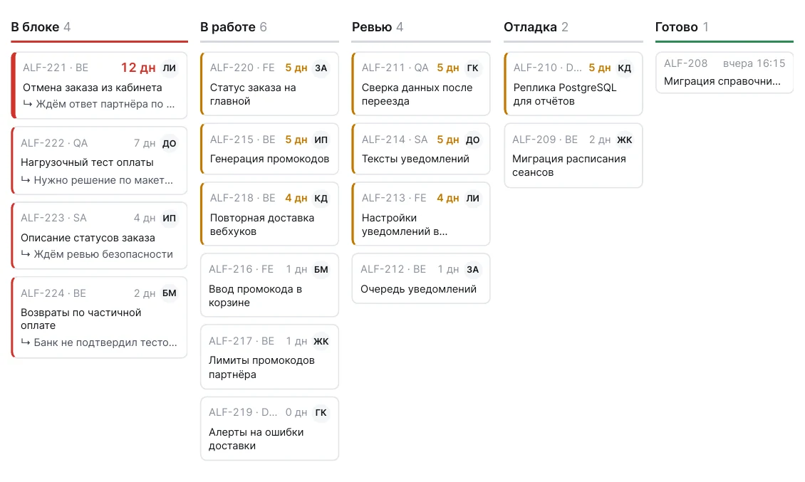

КОМАНДА · СПРИНТ · КАЖДОЕ УТРО
Отчёт спринта:
что техлиду
сделать сегодня
Две страницы PDF на команду к 8:40: успеваем ли к концу спринта, что держит команду и какие задачи сдвинуть — с номерами из Jira.
Burndown показывает, что отстаём.
Отчёт говорит, что с этим делать.
Ситуация
«Немного отстаём» —
не план на день
График сгорания отвечает на вопрос «отстаём ли», но не говорит, какие задачи двигать. Чтобы это понять, техлид каждое утро листает доску, а разговор о снятии объёма случается в последний день спринта.
Ответ за 15 секунд
Столько объёма спринта команда «Альфа» закроет к 19.10 при текущем темпе. Не хватит ≈77 SP — и это видно за четыре дня до конца, а не в последний.
Что приходит утром
Две страницы на команду


- Пульс командыпрогноз, темп, загрузка, узкое место
- Успеем к …?сгорание и пять решений на сегодня
- Сроки и обещаниякто, статус, отклонение в днях
- Эпики в спринтеготово, за 2 недели, в блоке
- Доскачто стоит дольше всего и у кого
Сверху · пульс команды
Четыре цифры, которые двигает техлид

Прогноз спринта
Ниже ~85% — идти к PO сейчас, а не в последний день.
Закрываем в день
Столбики против пунктира «нужно». Ускоряемся или нет — видно сразу.
В работе одновременно
Выше 1,5 задачи на человека — не брать новое, доделывать начатое.
Где ждут дольше
Худший этап красным — туда сегодня ставить людей.
У каждой цифры — изменение со вчера: ▲ зелёным, если к лучшему. Цифры не повторяют то, что ниже на странице.
Успеем к 19.10? · решения
Не «отстаём», а номера задач

- Снять блокивсе задачи в блоке, самые долгие первыми
- Провести ревью и отладкупочти готовое — сначала
- Разморозить застойбольше 3 рабочих дней без смены статуса
- Не успеваем — оповестить POне начатые, крупные первыми, на величину разрыва
- Оценить и декомпозироватьбез оценки и от 8 SP
Номер задачи — ссылка в Jira. Пунктир на графике — прогноз при текущем темпе, красная скобка — разрыв к концу спринта.
Сроки и обещания
Что обещали — и насколько сдвинулось

Эпики с целевой датой из Jira и обещания команды руководителю. У каждой строки — исполнитель, статус (доля готовых историй эпика или статус связанной задачи) и отклонение: −12 дн красным, «сегодня» — оранжевым.
Эпики в спринте
Двигаются ли эпики — без текста

Все эпики в работе, без «+ ещё». Полоса: синим — готово, зелёным — закрыто за 2 недели, голубым — в работе, красным — истории в блоке. Квадраты — истории этого спринта. Эпик без движения две недели помечен «стоит».
Страница 2 · доска
Где стоит работа и у кого

Колонки: в блоке (с причиной из последнего комментария), в работе, ревью, отладка, готово за день. Оранжевая кромка — застой больше 3 дней, красная — блок.
Живой отчёт
Отчёт целиком
Вымышленная команда «Альфа»: люди, задачи и эпики придуманы. Отчёт собран тем же кодом, что и для настоящих команд.
Как это собирается
Скрипт, а не ручная сводка
Только чтение
Активный спринт доски, история статусов, комментарии, эпики и их объём. Токен — личный, запросы — только GET.
Один JSON
Снимок команды на утро: из него отчёт пересчитывается без сети, и вчерашний можно сравнить.
Открытые формулы
Прогноз, темп, дни в статусе, разрыв — по истории переходов, в рабочих днях.
К 8:40 в чате
По будням файл на каждую команду и подпись: блоки по давности, движение за сутки.
Ни одной цифры не пишет ИИ: всё считает скрипт по данным Jira. Отчёт работает отдельно от остальной системы — достаточно токена Jira и номера доски. Код — poh-sprint-report 🔒
Почему цифрам можно верить
Каждая цифра — из истории Jira
Сгорание честное
В SP по полю оценки, без подзадач; нет оценки — числом задач и с такой подписью. Объём меняется, когда задачи входят в спринт.
Дни — рабочие
От последней смены статуса. Переоткрытая задача снова считается незакрытой.
Колонки — по правилам команды
Статус «Ожидает релиза» у одной команды — ревью, у другой — отладка: это настройка, а не правка кода.
Упрощения названы
Прогноз линейный, оценка — текущая. Ограничения записаны рядом с формулами.
Каждое утро —
план на сегодня
Python без сторонних пакетов и headless Chrome. Посмотреть отчёт можно сразу, на вымышленной команде; для своей — токен Jira и номер доски.
github.com/po-helper-org/poh-sprint-report 🔒